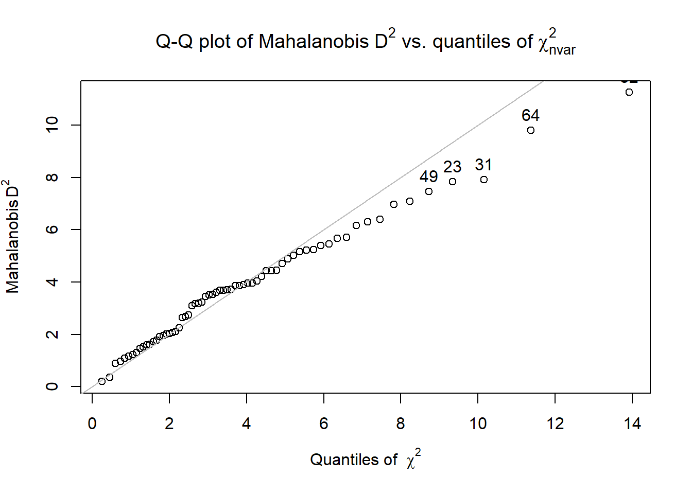

Chapter 3 Data Dx
The focus of this chapter is data diagnostics. We are asking the question, “Does the data have the appropriate characteristics for the analysis we want to perform?” Some statistics are more robust than others to violations of the assumptions about the characteristics of the data. None-the-less, we must report these characteristics when we disseminate the results.
3.2 Workflow for Preliminary Data Diagnostics
The same workflow guides us through the Scrubbing, Scoring, and Data Dx chapters. At this stage we have
- imported our raw data from Qualtrics,
- scrubbed the data by applying our inclusion and exclusion criteria, and
- used Parent’s available information approach [AIA; -Parent (2013)] for determining the acceptable amount of missingness for each scale, and
- prepared variables and scored them.
We are now ready to engage in data diagnostics for the statistical model we will test.

3.3 Research Vignette
The research vignette comes from the survey titled, Rate-a-Recent-Course: A ReCentering Psych Stats Exercise and is explained in the scrubbing chapter. In the scoring chapter we prepared four variables for analysis. Details for these are in our codebook.
Variable recap:
- Perceived Campus Climate for Black Students includes 6 items, one of which was reverse scored. This scale was adapted from Szymanski et al.’s (2020) Campus Climate for LGBTQ students. It has not been evaluated for use with other groups. The Szymanski et al. analysis suggested that it could be used as a total scale score, or divided into three items each that assess
- College response to LGBTQ students (items 6, 4, 1)
- LGBTQ stigma (items 3, 2, 5)
- Sense of Belonging includes 3 items. This is a subscale from Bollen and Hoyle’s (1990) Perceived Cohesion Scale. There are no items on this scale that require reversing.
- Percent of Black classmates is a single item that asked respondents to estimate the proportion of students in various racial categories
- Percent of BIPOC instructional staff, similarly, asked respondents to identify the racial category of each member of their instructional staff
As we noted in the scrubbing chapter, our design has notable limitations. Briefly, (a) owing to the open source aspect of the data we do not ask about the demographic characteristics of the respondent; (b) the items that ask respondents to guess the identities of the instructional staff and to place them in broad categories, (c) we do not provide a “write-in” a response. We made these decisions after extensive conversation with stakeholders. The primary reason for these decisions was to prevent potential harm (a) to respondents who could be identified if/when the revealed private information in this open-source survey, and (b) trolls who would write inappropriate or harmful comments.
As I think about “how these variables go together” (which is often where I start in planning a study), imagine a parallel mediation. That is the perception of campus climate for Black students would be predicted by the respondent’s sense of belonging, mediated in separate paths through the proportion of classmates who are Black and the proportion of BIPOC instructional staff.
I would like to assess the model by having the instructional staff variable to be the %Black instructional staff. At the time that this lecture is being prepared, there is not sufficient Black representation in the staff to model this.

I will finish up this chapter by conducting a regression. Because parallel mediation can be complicated (I teach it in a later chapter), I will demonstrate use of our prepared variables with a simple multiple regression.

First, though, let’s take a more conceptual look at issues regarding missing data. We’ll come back to details of the survey as we work with it.
3.4 Internal Consistency of Scales/Subscales
Alpha coefficients are reliability coefficients that assess the internal consistency of an instrument. It asks, “For each person, are responses consistently high, or medium, or low?” To the degree that they are (meaning there are high inter-item correlations), the internal consistency coefficient will be high. We want values >.80. There are numerous problems with alpha coefficients. The biggest one is that they are influenced by sample size – longer scales have higher alpha coefficients (Cortina, 1993). Fourteen seems to be a magic number where we begin to not trust the high alpha coefficient. I address this more thoroughly – offering an alternative – in psychometrics. While there is much criticism about the usefulness of the alpha coefficient (Sijtsma, 2009), researchers continue to use the alpha coefficient as an indicator of the internal consistency of scales that consist of multiple items and contain several variables.
We need item level data to compute an alpha coefficient. The easiest way to get an alpha coefficient is to feed the alpha() function (psych package) a concatonated list of items (with any items already reverse-scored). There should be no extra items. In the scoring chapter we already reverse-coded the single item in the campus climate scale, so we are ready to calculate alphas.
The df from which I am pulling data was created and written as an outfile in the scoring chapter. You may also download the file from the Github site that hosts the chapter. Be sure to place the file in the same folder as the .rmd file. This particular df has item-level data. I am working with the .rds file. In case this is problematic for you, I have also provided code to import a .csv version of the file.
item_scores_df <- readRDS("BlStItmsScrs230902.rds")
# item_scores_df <- read.csv('BlStItmsScrs230902.csv', header = TRUE)Within the psych::alpha function we can retrieve alpha coefficients for the specific variables of interest by imbedding a concatonated list. A priori, we are planning to use the campus climate scale as a total score. However, we’ll go ahead and also calculate alpha coefficients for the subscales because (a) it’s good practice and (b) if the alpha is low, a reason might show up in one of the subscales.
Reliability analysis
Call: psych::alpha(x = item_scores_df[c("Belong_1", "Belong_2", "Belong_3")])
raw_alpha std.alpha G6(smc) average_r S/N ase mean sd median_r
0.95 0.95 0.93 0.87 21 0.0099 4 1.5 0.88
95% confidence boundaries
lower alpha upper
Feldt 0.93 0.95 0.97
Duhachek 0.93 0.95 0.97
Reliability if an item is dropped:
raw_alpha std.alpha G6(smc) average_r S/N alpha se var.r med.r
Belong_1 0.94 0.94 0.88 0.88 15 0.016 NA 0.88
Belong_2 0.92 0.92 0.85 0.85 11 0.020 NA 0.85
Belong_3 0.94 0.94 0.89 0.89 16 0.015 NA 0.89
Item statistics
n raw.r std.r r.cor r.drop mean sd
Belong_1 64 0.95 0.95 0.92 0.90 4.1 1.5
Belong_2 65 0.96 0.96 0.94 0.92 4.1 1.6
Belong_3 64 0.95 0.95 0.91 0.89 3.8 1.5
Non missing response frequency for each item
1 2 3 4 5 6 7 miss
Belong_1 0.02 0.14 0.23 0.17 0.22 0.17 0.05 0.03
Belong_2 0.03 0.14 0.22 0.22 0.15 0.20 0.05 0.02
Belong_3 0.05 0.19 0.19 0.23 0.20 0.09 0.05 0.03For each scale I will capture a statement for the APA style write-up. Because these values are typically reported with each measure (and not in the prliminary results), I won’t create a cumulative write-up.
Cronbach’s alpha for the belonging scale was 0.95.
# alpha for the campus climate for Black students scale
psych::alpha(item_scores_df[c("rBlst_1", "Blst_2", "Blst_3", "Blst_4",
"Blst_5", "Blst_6")])
Reliability analysis
Call: psych::alpha(x = item_scores_df[c("rBlst_1", "Blst_2", "Blst_3",
"Blst_4", "Blst_5", "Blst_6")])
raw_alpha std.alpha G6(smc) average_r S/N ase mean sd median_r
0.85 0.87 0.87 0.52 6.5 0.03 2.5 1.1 0.52
95% confidence boundaries
lower alpha upper
Feldt 0.78 0.85 0.90
Duhachek 0.79 0.85 0.91
Reliability if an item is dropped:
raw_alpha std.alpha G6(smc) average_r S/N alpha se var.r med.r
rBlst_1 0.85 0.87 0.87 0.57 6.5 0.031 0.029 0.57
Blst_2 0.87 0.88 0.87 0.59 7.1 0.026 0.019 0.56
Blst_3 0.83 0.85 0.85 0.54 5.8 0.034 0.029 0.50
Blst_4 0.80 0.82 0.82 0.48 4.6 0.041 0.027 0.48
Blst_5 0.79 0.81 0.81 0.46 4.3 0.042 0.024 0.47
Blst_6 0.80 0.82 0.81 0.48 4.6 0.040 0.021 0.50
Item statistics
n raw.r std.r r.cor r.drop mean sd
rBlst_1 60 0.69 0.67 0.56 0.52 3.4 1.6
Blst_2 64 0.68 0.62 0.51 0.46 3.0 1.8
Blst_3 63 0.71 0.74 0.66 0.59 2.0 1.2
Blst_4 62 0.85 0.86 0.84 0.77 2.5 1.3
Blst_5 63 0.89 0.89 0.89 0.82 2.0 1.2
Blst_6 63 0.83 0.86 0.86 0.77 2.1 1.3
Non missing response frequency for each item
1 2 3 4 5 6 7 miss
rBlst_1 0.10 0.23 0.20 0.25 0.08 0.10 0.03 0.09
Blst_2 0.33 0.16 0.09 0.17 0.16 0.06 0.03 0.03
Blst_3 0.44 0.33 0.06 0.11 0.03 0.02 0.00 0.05
Blst_4 0.27 0.34 0.15 0.18 0.05 0.00 0.02 0.06
Blst_5 0.46 0.30 0.05 0.14 0.05 0.00 0.00 0.05
Blst_6 0.38 0.35 0.11 0.08 0.06 0.02 0.00 0.05Cronbach’s alpha for the campus climate scale was 0.87.
Since this value is \(\geq\) .80, it is within the realm of acceptability. Let’s go ahead, though, and examine its subscales.
# alpha for the stigma scale of the campus climate for Black students
# scale
psych::alpha(item_scores_df[c("Blst_3", "Blst_2", "Blst_5")])
Reliability analysis
Call: psych::alpha(x = item_scores_df[c("Blst_3", "Blst_2", "Blst_5")])
raw_alpha std.alpha G6(smc) average_r S/N ase mean sd median_r
0.69 0.73 0.69 0.47 2.7 0.065 2.3 1.2 0.54
95% confidence boundaries
lower alpha upper
Feldt 0.54 0.69 0.80
Duhachek 0.57 0.69 0.82
Reliability if an item is dropped:
raw_alpha std.alpha G6(smc) average_r S/N alpha se var.r med.r
Blst_3 0.67 0.70 0.54 0.54 2.35 0.074 NA 0.54
Blst_2 0.75 0.75 0.60 0.60 3.03 0.061 NA 0.60
Blst_5 0.41 0.43 0.28 0.28 0.76 0.135 NA 0.28
Item statistics
n raw.r std.r r.cor r.drop mean sd
Blst_3 63 0.72 0.78 0.62 0.46 2 1.2
Blst_2 64 0.82 0.75 0.55 0.46 3 1.8
Blst_5 63 0.87 0.89 0.83 0.70 2 1.2
Non missing response frequency for each item
1 2 3 4 5 6 7 miss
Blst_3 0.44 0.33 0.06 0.11 0.03 0.02 0.00 0.05
Blst_2 0.33 0.16 0.09 0.17 0.16 0.06 0.03 0.03
Blst_5 0.46 0.30 0.05 0.14 0.05 0.00 0.00 0.05Cronbach’s alpha for the campus climate stigma subscale was 0.73.
# alpha for the campus responsiveness scale of the campus climate for
# Black students scale
psych::alpha(item_scores_df[c("rBlst_1", "Blst_4", "Blst_6")])
Reliability analysis
Call: psych::alpha(x = item_scores_df[c("rBlst_1", "Blst_4", "Blst_6")])
raw_alpha std.alpha G6(smc) average_r S/N ase mean sd median_r
0.79 0.81 0.76 0.58 4.2 0.045 2.7 1.2 0.52
95% confidence boundaries
lower alpha upper
Feldt 0.69 0.79 0.87
Duhachek 0.71 0.79 0.88
Reliability if an item is dropped:
raw_alpha std.alpha G6(smc) average_r S/N alpha se var.r med.r
rBlst_1 0.86 0.86 0.75 0.75 6.0 0.035 NA 0.75
Blst_4 0.64 0.65 0.48 0.48 1.8 0.087 NA 0.48
Blst_6 0.68 0.68 0.52 0.52 2.1 0.078 NA 0.52
Item statistics
n raw.r std.r r.cor r.drop mean sd
rBlst_1 60 0.81 0.78 0.58 0.53 3.4 1.6
Blst_4 62 0.88 0.89 0.84 0.72 2.5 1.3
Blst_6 63 0.85 0.87 0.81 0.69 2.1 1.3
Non missing response frequency for each item
1 2 3 4 5 6 7 miss
rBlst_1 0.10 0.23 0.20 0.25 0.08 0.10 0.03 0.09
Blst_4 0.27 0.34 0.15 0.18 0.05 0.00 0.02 0.06
Blst_6 0.38 0.35 0.11 0.08 0.06 0.02 0.00 0.05Cronbach’s alpha for the campus climate responsiveness subscale was 0.80. Between the two subscales, it looks as if the responsivenes subscale is more internally consistent.
3.5 Distributional Characteristics of the Variables
3.5.1 Evaluating Univariate Normality
Statistics like ANOVA and regression each have a set of assumptions about the distributional characteristics of the data. In most of the chapters in this OER we review those assumptions and how to evaluate them. Common across many statistics is the requirement of univariate and multivariate normality. Let’s take a look at the variables we will use in our analysis and assess those.
We can continue to work from the df we uploaded at the beginning of the chapter to do this work. Let’s take a quick peek. This df has the item-level data (we used it for the alpha coefficients); the scale and subscale scores; and the two items that assess proportion of instructional staff that are BIPOC and proportion of classmates that are BIPOC.
The str() function let’s us look at the variable format/measurement level of each variable.
Classes 'tbl_df', 'tbl' and 'data.frame': 66 obs. of 17 variables:
$ ID : int 1 2 3 4 5 6 7 8 9 10 ...
$ iBIPOC_pr : num 0.333 0 0.5 0.333 1 ...
$ cmBlack : num 0 5 10 6 5 20 0 0 0 4 ...
..- attr(*, "label")= Named chr "Regarding race, what proportion of students were from each broad classification. Your responses should add to 100%. - Black"
.. ..- attr(*, "names")= chr "Race_1"
$ Belong_1 : num 6 4 NA 5 4 5 6 7 6 3 ...
..- attr(*, "label")= Named chr "Please indicate the degree to which you agree with the following questions about the course. Please skip the it"| __truncated__
.. ..- attr(*, "names")= chr "Belong_1"
$ Belong_2 : num 6 4 3 3 4 6 6 7 6 3 ...
..- attr(*, "label")= Named chr "Please indicate the degree to which you agree with the following questions about the course. Please skip the it"| __truncated__
.. ..- attr(*, "names")= chr "Belong_2"
$ Belong_3 : num 7 6 NA 2 4 5 5 7 6 3 ...
..- attr(*, "label")= Named chr "Please indicate the degree to which you agree with the following questions about the course. Please skip the it"| __truncated__
.. ..- attr(*, "names")= chr "Belong_3"
$ Blst_1 : num 5 6 NA 2 6 5 5 5 5 3 ...
..- attr(*, "label")= Named chr "Each item below asks you to rate elements of campus climate for your \"academic department/program.\" If you d"| __truncated__
.. ..- attr(*, "names")= chr "Blst_1"
$ Blst_2 : num 3 6 5 2 1 1 4 4 3 5 ...
..- attr(*, "label")= Named chr "Each item below asks you to rate elements of campus climate for your \"academic department/program.\" If you d"| __truncated__
.. ..- attr(*, "names")= chr "Blst_2"
$ Blst_3 : num 5 2 2 2 1 1 4 3 1 2 ...
..- attr(*, "label")= Named chr "Each item below asks you to rate elements of campus climate for your \"academic department/program.\" If you d"| __truncated__
.. ..- attr(*, "names")= chr "Blst_3"
$ Blst_4 : num 2 2 2 2 1 2 4 3 2 3 ...
..- attr(*, "label")= Named chr "Each item below asks you to rate elements of campus climate for your \"academic department/program.\" If you d"| __truncated__
.. ..- attr(*, "names")= chr "Blst_4"
$ Blst_5 : num 2 4 NA 2 1 1 4 4 1 3 ...
..- attr(*, "label")= Named chr "Each item below asks you to rate elements of campus climate for your \"academic department/program.\" If you d"| __truncated__
.. ..- attr(*, "names")= chr "Blst_5"
$ Blst_6 : num 2 1 2 2 1 2 4 3 2 3 ...
..- attr(*, "label")= Named chr "Each item below asks you to rate elements of campus climate for your \"academic department/program.\" If you d"| __truncated__
.. ..- attr(*, "names")= chr "Blst_6"
$ rBlst_1 : num 3 2 NA 6 2 3 3 3 3 5 ...
..- attr(*, "label")= Named chr "Each item below asks you to rate elements of campus climate for your \"academic department/program.\" If you d"| __truncated__
.. ..- attr(*, "names")= chr "Blst_1"
$ Belonging : num 6.33 4.67 NA 3.33 4 5.33 5.67 7 6 3 ...
$ ResponseBL: num 2.33 1.67 2 3.33 1.33 2.33 3.67 3 2.33 3.67 ...
$ StigmaBL : num 3.33 4 3.5 2 1 1 4 3.67 1.67 3.33 ...
$ ClimateBL : num 2.83 2.83 NA 2.67 1.17 1.67 3.83 3.33 2 3.5 ...
- attr(*, "column_map")=Classes 'tbl_df', 'tbl' and 'data.frame': 182 obs. of 7 variables:
..$ qname : chr [1:182] "StartDate" "EndDate" "Status" "Progress" ...
..$ description: chr [1:182] "Start Date" "End Date" "Response Type" "Progress" ...
..$ main : chr [1:182] "Start Date" "End Date" "Response Type" "Progress" ...
..$ sub : chr [1:182] "" "" "" "" ...
..$ ImportId : chr [1:182] "startDate" "endDate" "status" "progress" ...
..$ timeZone : chr [1:182] "America/Los_Angeles" "America/Los_Angeles" NA NA ...
..$ choiceId : chr [1:182] NA NA NA NA ...The difference between “int” (integer) and “num” (numerical) is that integers are limited to whole numbers. For the statistics used in this lesson, both are acceptable formats for the variables.
# the script may look a little complicated; I could have simply
# written: describe(item_scores_df) because I only wanted only a few
# variables, I provided them in a concatenated: list [c('iBIPOC_pr',
# 'cmBlack', 'Belonging', 'ClimateBL')] I used type =1 so that we can
# interpret skew and kurtosis along Kline's recommendations I created
# an object from the descriptive results, this can be used to export
# the results for easier table making or manipulation outside of R
descriptives <- psych::describe(item_scores_df[c("iBIPOC_pr", "cmBlack",
"Belonging", "ClimateBL")], type = 1)
# When we capture results in an object, we need to write it below so
# the results will display
descriptives vars n mean sd median trimmed mad min max range skew kurtosis
iBIPOC_pr 1 64 0.35 0.39 0.25 0.32 0.37 0 1.00 1.00 0.64 -1.05
cmBlack 2 66 8.20 8.02 5.50 7.24 8.15 0 30.00 30.00 0.95 0.05
Belonging 3 64 4.03 1.47 4.00 4.03 1.48 1 7.00 6.00 0.03 -0.76
ClimateBL 4 61 2.48 1.09 2.33 2.41 0.99 1 5.67 4.67 0.56 0.04
se
iBIPOC_pr 0.05
cmBlack 0.99
Belonging 0.18
ClimateBL 0.14# this can be useful if you wish to manually format the data for an
# APA style table
write.csv(descriptives, file = "DataDx_descripts.csv")Skew and kurtosis are one way to evaluate whether or not data are normally distributed. When we use the “type=1” argument, the skew and kurtosis indices in the psych package can be interpreted according to Kline’s (2016a) guidelines. Regarding skew, values greater than the absolute value of 3.0 are generally considered “severely skewed.” Regarding kurtosis, “severely kurtotic” is argued to be anywhere greater 8 to 20. Kline recommended using a conservative threshold of the absolute value of 10. The skew and kurtosis values for our variables fall well below these thesholds.
We can also apply the Shapiro-Wilk test of normality to each of our variables. When the \(p\) value is < .05, the variable’s distribution is deviates from a normal distribution to a degree that is statistically significant. Below, the plotting of the histogram with a normal curve superimposed shows how the distribution approximates one that is normal.
# The shapiro-test is in base R; it's specification is simple:
# shapiro.test(df$variable) I added the object (and had to list it
# below) so I can use the inline text function
shapiro.test(item_scores_df$cmBlack)
Shapiro-Wilk normality test
data: item_scores_df$cmBlack
W = 0.87796, p-value = 0.000009899
Shapiro-Wilk normality test
data: item_scores_df$iBIPOC_pr
W = 0.78725, p-value = 0.00000003181
Shapiro-Wilk normality test
data: item_scores_df$Belonging
W = 0.97262, p-value = 0.1654
Shapiro-Wilk normality test
data: item_scores_df$ClimateBL
W = 0.95102, p-value = 0.016133.5.2 Pairs Panels
As we work our way from univariate to multivariate inspection of our data, let’s take a look at the bivariate relations.
The pairs.panels() function from the psych package is useful for showing the relationship between variables (probably no more than 10) in a model.
- The lower half is a scatterplot between the two variables with a regression line (red) and mean (dot).
- The diagonal is a histogram of each variable.
- The upper half of is the correlation coefficient between the two variables.
psych::pairs.panels(item_scores_df[c("iBIPOC_pr", "cmBlack", "Belonging",
"ClimateBL")], stars = TRUE, lm = TRUE)
The histograms displayed in the diagonal graph for us what we learned from the Shapiro Wilk’s test of normality. We can clearly see the non-normal distribution in the iBIPOC_pr and cmBlack variables.
CUMULATIVE CAPTURE FOR THE APA STYLE WRITE-UP:
Regarding the distributional characteristics of the data, skew and kurtosis values of the variables fell below the values of 3 (skew) and 10 (kurtosis) that Kline suggests are concerning (2016b). Results of the Shapiro-Wilk test of normality indicate that our variables assessing the proportion of classmates who are Black (\(W = 0.878, p < 0.001\)) and the proportion of BIPOC instructional staff(\(W = 0.787, p < 0.001\)) are statistically significantly different than a normal distribution. Similarly the scale assessing the respondent’s perception of campus climate for Black students (\(W = 0.951, p = 0.016\)) differed significantly from a normal distribution. In all three cases the skew values and histograms suggested a somewhat positive skew. That is, there were predominantly low proportions of instructional staff who are BIPOC and classmates who are Black, and the perceptions of campus climate for Black students was evaluated somewhat favorably. The scales assessing the respondent’s belonging (\(0.973, p = 0.165\)) did not differ significantly from a normal distribution.
What would we do in the case of a univariate outlier? I find Kline’s (2016b) chapter on data preparation and management to be extremely useful. He provides ideas for more complex analysis of both univariate and multivariate normality and provides suggestions that range from recoding an extreme value to the next most extreme that is within three standard deviations of the mean to more complicated transformations. First, though we need to further examine the relationships between variables. We do that, next.
3.6 Evaluating Multivariate Normality
Multivariate outliers have extreme scores on two or more variables, or a pattern of scores that is atypical. For example, a case may have scores between two and three standard deviations above the mean on all variables, even though no case would be extreme. A common method of multivariate outlier detection is the Mahalanobis distance (\(D_{M}^{2}\)). This indicates the distance in variance units between the profile of scores for that case and the vector of sample means, or centroid, correcting for intercorrelations.
The outlier() function from the psych package tells us how far each datapoint is from the multivariate centroid of the data. That is, find the squared Mahalanobis distance for each data point and compare it to the expected values of \(\chi^2\). The outlier() protocol also produces a Q-Q (quantile-quantile) plot with the n most extreme data points labeled.
The code below appends the Mahalanobis values to the dataframe. It is easy, then, to identify, sort, and examine the most extreme values (relative to the rest of the data in their case/row) to make decisions about their retention or adjustment.
Numeric variables are required in the of the calculation of the Mahalanobis.
item_scores_df$Mahal <- psych::outlier(item_scores_df[c("iBIPOC_pr", "cmBlack",
"Belonging", "ClimateBL")])
Q-Q plots take your sample data, sort it in ascending order, and then plot them versus quantiles (the number varies; you can see it on the X axis) calculated from a theoretical distribution. The number of quantiles is selected to match the size of your sample data. While Normal Q-Q Plots are the ones most often used in practice due to so many statistical methods assuming normality, Q-Q Plots can actually be created for any distribution. To the degree that the plotted line stays on the straight line (representing the theoretical normal distribution), the data is multivariate normally distributed.
It is possible, then to analyze the Mahalanobis distance values.
vars n mean sd median trimmed mad min max range skew kurtosis se
X1 1 66 3.81 2.24 3.68 3.62 2.36 0.2 11.25 11.05 0.86 0.82 0.28Using this information we can determine cases that have a Mahalanobis distance values that exceeds three standard deviations around the median. In fact, we can have these noted in a column in the dataframe.
# creates a variable indicating TRUE or FALSE if an item is an
# outlier
item_scores_df$MOutlier <- dplyr::if_else(item_scores_df$Mahal > (median(item_scores_df$Mahal) +
(3 * sd(item_scores_df$Mahal))), TRUE, FALSE)
# shows us the first 6 rows of the data so we can see the new
# variables (Mahal, MOutlier)
head(item_scores_df)# A tibble: 6 × 19
ID iBIPOC_pr cmBlack Belong_1 Belong_2 Belong_3 Blst_1 Blst_2 Blst_3 Blst_4
<int> <dbl> <dbl> <dbl> <dbl> <dbl> <dbl> <dbl> <dbl> <dbl>
1 1 0.333 0 6 6 7 5 3 5 2
2 2 0 5 4 4 6 6 6 2 2
3 3 0.5 10 NA 3 NA NA 5 2 2
4 4 0.333 6 5 3 2 2 2 2 2
5 5 1 5 4 4 4 6 1 1 1
6 6 0 20 5 6 5 5 1 1 2
# ℹ 9 more variables: Blst_5 <dbl>, Blst_6 <dbl>, rBlst_1 <dbl>,
# Belonging <dbl>, ResponseBL <dbl>, StigmaBL <dbl>, ClimateBL <dbl>,
# Mahal <dbl>, MOutlier <lgl>── Attaching core tidyverse packages ──────────────────────── tidyverse 2.0.0 ──
✔ dplyr 1.1.2 ✔ readr 2.1.4
✔ forcats 1.0.0 ✔ stringr 1.5.0
✔ ggplot2 3.4.3 ✔ tibble 3.2.1
✔ lubridate 1.9.2 ✔ tidyr 1.3.0
✔ purrr 1.0.1
── Conflicts ────────────────────────────────────────── tidyverse_conflicts() ──
✖ dplyr::filter() masks stats::filter()
✖ dplyr::lag() masks stats::lag()
ℹ Use the conflicted package (<http://conflicted.r-lib.org/>) to force all conflicts to become errors# counts frequency TRUE and FALSE indicating outlier or not
OutlierCount <- item_scores_df %>%
dplyr::count(MOutlier)
# calculating how many outliers a slightly different way
nrow(item_scores_df) - OutlierCount MOutlier n
1 66 1
2 65 65When we identify outliers we often ask if we should delete them or transform the data. A general rule of thumb is to look for “jumps” in the Mahalanobis distance values. If they are progressing steadily and there is no “jump,” researchers will often retain the outliers.
CUMULATIVE CAPTURE FOR THE APA STYLE WRITE-UP:
We evaluated multivariate normality with the Mahalanobis distance test. Specifically, we used the psych::outlier() function and included all continuous variables in the calculation. Our visual inspection of the Q-Q plot suggested that the plotted line strayed from the straight line as the quantiles increased. Additionally, we appended the Mahalanobis distance scores as a variable to the data. Analyzing this variable, we found that 1 case exceed three standard deviations beyond the median. Given that the Mahalanobis distance values increased in a consistent manner (i.e., no extreme “jumps”) we retained all cases.
3.7 A Few Words on Transformations
To quote from Kline (2016b), “Before applying a normalizing transformation, you should think about the variables of interest and whether the expectation of normality is reasonable.” (p. 77)
At this point in history, the non-normal distribution of the proportions of classmates who are Black and instructional staff who are BIPOC are accurate representations in higher education. Kline (2016b) has noted that transforming an inherently non-normal variable to force a normal distribution may fundamentally alter it such that the variable of interest is not actually studied. Kline’s chapter reviews some options for applying corrections to outliers. Additionally, the chapter describes a variety of normalizing transformations.
On a personal note, while I will use standardized scores (a linear transformation) if it improves interpretation and center variables around a meaningful intercept, I tend to resist the transformation of data without a really compelling reason. Why? It’s complicated and can make interpretation difficult.
3.8 The APA Style Write-Up
This results section will draw from the three lessons on scrubbing, scoring, and data diagnostics.:
3.8.1 Data Diagnostics
Data screening suggested that 107 individuals opened the survey link. Of those, 83 granted consent and proceeded into the survey items. A further inclusion criteria was that the course was taught in the U.S; 69 met this criteria.
Available item analysis (AIA; (Parent, 2013)) is a strategy for managing missing data that uses available data for analysis and excludes cases with missing data points only for analyses in which the data points would be directly involved. Parent (2013) suggested that AIA is equivalent to more complex methods (e.g., multiple imputation) across a number of variations of sample size, magnitude of associations among items, and degree of missingness. Thus, we utilized Parent’s recommendations to guide our approach to managing missing data. Missing data analyses were conducted with tools in base R as well as the R packages, psych (v. 2.3.6) and mice (v. 3.16.0).
Across cases that were deemed eligible on the basis of the inclusion/exclusion criteria, missingness ranged from 0 to 67%. Across the dataset, 3.86% of cells had missing data and 87.88% of cases had nonmissing data. At this stage in the analysis, we allowed all cases with less than 90% missing to continue to the scoring stage. Guided by Parent’s (2013) AIA approach, scales with three items were scored if at least two items were non-missing; the scale with four items was scored if it at least three non-missing items; and the scale with six items was scored if it had at least five non-missing items.
Across the 66 cases for which the scoring protocol was applied, missingness ranged from 0 to 67%. After eliminating cases with greater than 20% missing, the dataset analyzed included 61 cases. In this dataset we had less than 1% (0.55%) missing across the df; 97% of the rows had nonmissing data.
Regarding the distributional characteristics of the data, skew and kurtosis values of the variables fell below the values of 3 (skew) and 10 (kurtosis) that Kline suggests are concerning (2016b). Results of the Shapiro-Wilk test of normality indicate that our variables assessing the proportion of classmates who are Black (\(W = 0.878, p < 0.001\)) and the proportion of BIPOC instructional staff(\(W = 0.787, p < 0.001\)) are statistically significantly different than a normal distribution. The scales assessing the respondent’s belonging (\(0.973, p = 0.165\)) and the respondent’s perception of campus climate for Black students (\(W = 0.951, p = 0.016\)) did not differ differently from a normal distribution.
We evaluated multivariate normality with the Mahalanobis distance test. Specifically, we used the psych::outlier() function and included all continuous variables in the calculation. Our visual inspection of the Q-Q plot suggested that the plotted line strayed from the straight line as the quantiles increased. Additionally, we appended the Mahalanobis distance scores as a variable to the data. Analyzing this variable, we found that 1 case exceed three standard deviations beyond the median. Given that the Mahalanobis distance values increased in a consistent manner (i.e., no extreme “jumps”) we retained all cases.
Given that our sample sizes were reasonable for the planned analyses and the degree of missingness was low, we used pairwise deletion in our multiple regression analysis.
3.9 A Quick Regression of our Research Vignette
With some confidence that our scrubbed-and-scored variables are appropriate for analysis, let me conduct the super quick regression that is our research vignette.
Climate_fit <- lm(ClimateBL ~ Belonging + cmBlack + iBIPOC_pr, data = item_scores_df)
summary(Climate_fit)
Call:
lm(formula = ClimateBL ~ Belonging + cmBlack + iBIPOC_pr, data = item_scores_df)
Residuals:
Min 1Q Median 3Q Max
-1.86732 -0.80535 0.02355 0.70459 3.02003
Coefficients:
Estimate Std. Error t value Pr(>|t|)
(Intercept) 2.90791 0.46653 6.233 0.0000000674 ***
Belonging -0.01742 0.09643 -0.181 0.857
cmBlack -0.01918 0.01717 -1.117 0.269
iBIPOC_pr -0.64125 0.35701 -1.796 0.078 .
---
Signif. codes: 0 '***' 0.001 '**' 0.01 '*' 0.05 '.' 0.1 ' ' 1
Residual standard error: 1.066 on 55 degrees of freedom
(7 observations deleted due to missingness)
Multiple R-squared: 0.08212, Adjusted R-squared: 0.03206
F-statistic: 1.64 on 3 and 55 DF, p-value: 0.19063.9.1 Results
Results of a multiple regression predicting the respondents’ perceptions of campus climate for Black students indicated that neither contributions of the respondents’ personal belonging (\(B = -0.017, p = -.857\)), the proportion of BIPOC instructional staff (\(B-0.641, p = 0.078), nor the proportion of Black classmates (\)B$ = -0.019, p = 0.269 ) led to statistically significant changes in perceptions of campus climate for Black students. The model accounted for only 8% of the variance and was not statistically significant (\(p = 0.191\)). Means, standard deviations, and correlations among variables are presented in Table 1; results of the regression model are presented in Table 2.
apaTables::apa.cor.table(item_scores_df[c("iBIPOC_pr", "cmBlack", "Belonging",
"ClimateBL")], table.number = 1, show.sig.stars = TRUE, filename = "Table1_M_SDs_r_DataDx.doc")
Table 1
Means, standard deviations, and correlations with confidence intervals
Variable M SD 1 2 3
1. iBIPOC_pr 0.35 0.39
2. cmBlack 8.20 8.02 .07
[-.18, .31]
3. Belonging 4.03 1.47 .01 -.13
[-.24, .26] [-.36, .12]
4. ClimateBL 2.48 1.09 -.25 -.17 -.04
[-.47, .01] [-.41, .08] [-.29, .22]
Note. M and SD are used to represent mean and standard deviation, respectively.
Values in square brackets indicate the 95% confidence interval.
The confidence interval is a plausible range of population correlations
that could have caused the sample correlation (Cumming, 2014).
* indicates p < .05. ** indicates p < .01.
library(apaTables)
apaTables::apa.reg.table(Climate_fit, table.number = 2, filename = "Climate_table.doc")
Table 2
Regression results using ClimateBL as the criterion
Predictor b b_95%_CI beta beta_95%_CI sr2 sr2_95%_CI r
(Intercept) 2.91** [1.97, 3.84]
Belonging -0.02 [-0.21, 0.18] -0.02 [-0.28, 0.24] .00 [-.01, .01] -.00
cmBlack -0.02 [-0.05, 0.02] -0.15 [-0.41, 0.12] .02 [-.05, .09] -.17
iBIPOC_pr -0.64 [-1.36, 0.07] -0.23 [-0.49, 0.03] .05 [-.06, .16] -.25
Fit
R2 = .082
95% CI[.00,.20]
Note. A significant b-weight indicates the beta-weight and semi-partial correlation are also significant.
b represents unstandardized regression weights. beta indicates the standardized regression weights.
sr2 represents the semi-partial correlation squared. r represents the zero-order correlation.
Square brackets are used to enclose the lower and upper limits of a confidence interval.
* indicates p < .05. ** indicates p < .01.
3.10 Practice Problems
The three problems described below are designed to be continuations from the Scrubbing and Scoring lessons. You will likely encounter challenges that were not covered in this chapter. Search for and try out solutions, knowing that there are multiple paths through the analysis. The overall notion of the suggestions for practice are to (a) calculate alpha coefficients for the scales, (b) evaluate univariate and multivariate normality, (c) create an APA-style write-up appropriate for a data diagnostics subsection of the results, and (d) run a “quickie” regression, ANOVA, or similar analysis.
3.10.1 Problem #1: Reworking the Chapter Problem
If you chose this option in the prior chapters, you imported the data from Qualtrics, applied inclusion/exclusion criteria, renamed variables, downsized the df to the variables of interest, properly formatted the variables, interpreted item-level missingness, scored the scales/subscales, interpreted scale-level missingness, and wrote up the results. Please continue with the remaining tasks.
3.10.2 Problem #2: Use the Rate-a-Recent-Course Survey, Choosing Different Variables
If you chose this option in the prior chapter, you chose a minimum of three variables (different from those in the cahpter) from the Rate-a-Recent-Course survey to include in a simple statistical model. You imported the data from Qualtrics, applied inclusion/exclusion criteria, renamed variables, downsized the df to the variables of interest, properly formatted the variables, interpreted item-level missingness, scored the scales/subscales, interpreted scale-level missingness, and wrote up the results. Please continue with the remaining tasks.
3.10.3 Problem #3: Other data
If you chose this option in the prior chapter, you used raw data that was available to you. You imported it into R, applied inclusion/exclusion criteria, renamed variables, downsized the df to the variables of interest, properly formatted the variables, interpreted item-level missingness, scored the scales/subscales, interpreted scale-level missingness, and wrote up the results. Please continue with the remaining tasks.
3.10.4 Grading Rubric
| Assignment Component | ||
|---|---|---|
| 1. Calculate alpha coefficients for scales/subscales. | 5 | _____ |
| 2. Evaluate univariate normality (skew, kurtosis, Shapiro-Wilks). | 5 | _____ |
| 3. Evaluate multivariate normality (Mahalanobis test) | 5 | _____ |
| 4. Represent your work in an APA-style write-up (added to the writeup in the previous chapter) | 5 | _____ |
| 5. Conduct a quick analysis (e.g., regression, ANOVA) including at least three predictor variables | 5 | _____ |
| 6. Explanation to grader | 5 | _____ |
| Totals | 30 | _____ |
3.11 Homeworked Example
For more information about the data used in this homeworked example, please refer to the description and codebook located at the end of the introductory lesson in ReCentering Psych Stats. An .rds file which holds the data is located in the Worked Examples folder at the GitHub site the hosts the OER. The file name is ReC.rds.
Although the lessons focused on preparing data for analyses were presented in smaller sections, this homeworked example combines the suggestions for practice from the Scrubbing, Scoring, and Data Dx lessons. My hope is that is cumulative presentation is a closer approximation of what researchers need for their research projects.
These lessons were created to prepare a set of data to analyze a specific research model. Consequently, the model should be known and described at the beginning.
3.11.1 Scrubbing
Specify a research model
A further requirement was that the model should include three predictor variables (continuously or categorically scaled) and one dependent (continuously scaled) variable.
I am hypothesizing that socially responsive pedagogy (my dependent variable) will increase as a function of:
- the transition from SPSS (0) to R(1),
- the transition from a pre-centered (0) to re-centered (1) curriculum, and
- higher evaluations of traditional pedagogy
Because this data is nested within the person (i.e., students can contribute up to three course evaluations over the ANOVA, multivariate, and psychometrics courses) proper analysis would require a statistic (e.g., multilevel modeling) that would address the dependency in the data. Therefore, I will include only those students who are taking the multivariate modeling class.
If you wanted to use this example and dataset as a basis for a homework assignment, you could create a different subset of data. I worked the example for students taking the multivariate modeling class. You could choose ANOVA or psychometrics. You could also choose a different combinations of variables.

Include only those who consented
Because this data is publicly posted on the Open Science Framework, it was necessary for me to already exclude those individuals. This data was unique in that students could freely write some version of “Opt out.” My original code included a handful of versions, but here was the basic form:
Apply exclusionary criteria
I want to exclude students’ responses for the ANOVA and psychometrics courses.
At this point, these my only inclusion/exclusion criteria. I can determine how many students (who consented) completed any portion of the survey.
[1] 84Rename variables to be sensible and systematic
Because this dataset is already on the OSF, the variables are sensibly named. However, I don’t like “SPFC.Decolonize.Opt.Out”. I will change it to simply “OptOut.”
It would have made more sense to do this before I used this variable in the calculations.
Downsize the dataframe to the variables of interest
I will need to include:
- deID
- StatsPkg
- Centering
- Items included in the traditional pedagogy scale: ClearResponsibilities, EffectiveAnswers, Feedback, ClearOrganization, ClearPresentation
- Items included in the socially responsive pedagogy scale: InclusvClassrm, EquitableEval, MultPerspectives, DEIintegration
Provide an APA style write-up of these preliminary steps
This is a secondary analysis of data involved in a more comprehensive dataset that included students taking multiple statistics courses (N = 310). Having retrieved this data from a repository in the Open Science Framework, only those who consented to participation in the study were included. Data used in these analyses were 84 students who completed the multivariate class.
3.11.2 Scoring
Proper formatting of the item(s) in your first predictor variable
StatsPkg is a dichotomous variable. It should be structured as a factor with two ordered levels: SPSS, R
Because I am using the .rds form of the data from the OSF, this variable retains the former structure I assigned to it. If I needed to write the code, I would do this:
Factor w/ 2 levels "SPSS","R": 2 2 2 2 2 2 2 2 2 2 ...Proper formatting of item(s) in your second predictor variable
Similarly, Centering is a dichotomous variable. It should be structured as a factor with two ordered levels: Pre, Re.
Because I am using the .rds form of the data from the OSF, this variable retains the former structure I assigned to it. If I needed to write the code, I would do this:
Factor w/ 2 levels "Pre","Re": 2 2 2 2 2 2 2 2 2 2 ...Proper formatting of the item(s) in your dependent variable
The third predictor variable is traditional pedagogy. The dependent variable is socially repsonsive pedagogy. The items that will be used in the scale scores for both of these variables are all continuously scaled and should be identified as “int” or “num.” None of the items need to be reverse-scored.
Classes 'data.table' and 'data.frame': 84 obs. of 12 variables:
$ deID : int 11 12 13 14 15 16 17 18 35 19 ...
$ StatsPkg : Factor w/ 2 levels "SPSS","R": 2 2 2 2 2 2 2 2 2 2 ...
$ Centering : Factor w/ 2 levels "Pre","Re": 2 2 2 2 2 2 2 2 2 2 ...
$ ClearResponsibilities: int 4 5 5 5 4 3 5 5 3 5 ...
$ EffectiveAnswers : int 4 5 5 4 4 3 5 5 4 4 ...
$ Feedback : int 4 5 4 4 5 4 5 4 4 5 ...
$ ClearOrganization : int 3 5 5 4 4 3 5 5 4 5 ...
$ ClearPresentation : int 4 5 5 3 4 2 5 4 5 5 ...
$ InclusvClassrm : int 5 5 5 5 5 4 5 5 5 5 ...
$ EquitableEval : int 4 5 5 5 4 4 5 4 5 5 ...
$ MultPerspectives : int 4 5 5 5 5 5 5 4 5 5 ...
$ DEIintegration : int 5 5 5 5 5 5 5 5 5 5 ...
- attr(*, ".internal.selfref")=<externalptr> Evaluate and interpret item-level missingness
The scrub_df is already downsized to include the item-level raw variables and the ID variable. We can continue using it.
I will create a “proportion missing” variable.
In this chunk I first calculate the number of missing (nmiss)
library(tidyverse)#needed because the script has pipes
#Calculating number and proportion of item-level missingness
scrub_df$nmiss <- scrub_df%>%
dplyr::select(StatsPkg:DEIintegration) %>% #the colon allows us to include all variables between the two listed (the variables need to be in order)
is.na %>%
rowSums
scrub_df<- scrub_df%>%
dplyr::mutate(prop_miss = (nmiss/11)*100) #11 is the number of variables included in calculating the proportionWe can grab the descriptives for the prop_miss variable to begin to understand our data. I will create an object from it so I can use it with inline
vars n mean sd median trimmed mad min max range skew kurtosis se
X1 1 84 2.38 6.17 0 0.94 0 0 36.36 36.36 3.29 12.33 0.67Because I want to use the AIA approach to scoring, I’m not willing to filter out any cases yet. If I wanted to eliminate cases with egregious missing (i.e., like 90%), here is the code I would use:
scrub_df <- dplyr::filter(scrub_df, prop_miss <= 90) #update df to have only those with at least 90% of complete dataCUMULATIVE CAPTURE FOR WRITING IT UP:
Across cases that were deemed eligible on the basis of the inclusion/exclusion criteria, missingness ranged from 0 to 36%.
To analyze missingness at the item level, we need a df that has only the variables of interest. That is, variables like ID and the prop_miss and nmiss variables we created will interfere with an accurate assessment of missingness. I will update our df to eliminate these.
# further update to exclude the n_miss and prop_miss variables
ItemMiss_df <- scrub_df %>%
dplyr::select(-c(deID, nmiss, prop_miss))Missing data analysis commonly looks at proportions by:
- the entire df
- rows/cases/people
# what proportion of cells missing across entire dataset
formattable::percent(mean(is.na(ItemMiss_df)))[1] 2.38%# what proportion of cases (rows) are complete (nonmissing)
formattable::percent(mean(complete.cases(ItemMiss_df)))[1] 82.14%CUMULATIVE CAPTURE FOR WRITING IT UP:
Across cases that were deemed eligible on the basis of the inclusion/exclusion criteria, missingness ranged from 0 to 36%. Across the dataset, 2.38% of cells had missing data and 82.14% of cases had nonmissing data.
We can further explore patterns of missingness with mice.md.pattern.
There are 6 missingness patterns. The most common (n = 69) have no missingness. There are 11 students missing the DEIintegration item (on the traditional pedagogy scale). This item may have been a later addition to the Canvas course evaluations.
Comparing this to Enders’ (2010) prototypical patterns of missingness (page 3), the mice output represents the monotonic pattern often caused by test fatigue. That is, once a student stopped responding, they didn’t continue with the rest of the evaluation. That said, this was true of only 4 students (1 each pattern). A quick reminder – diagnosing monotonicity requires that the variables in the mice.mdpattern figures were presented to the research participant in that order.
Score any scales/subscales
Traditional pedagogy is a predictor variable that needs to be created by calculating the mean if at least 75% of the items are non-missing. None of the items need to be reverse-scored. I will return to working with the scrub_df data.
# this seems to work when I build the book, but not in 'working the
# problem' TradPed_vars <- c('ClearResponsibilities',
# 'EffectiveAnswers','Feedback',
# 'ClearOrganization','ClearPresentation') scrub_df$TradPed <-
# sjstats::mean_n(scrub_df[, TradPed_vars], .75)
# this seems to work when I 'work the problem' (but not when I build
# the book) the difference is the two dots before the last SRPed_vars
TradPed_vars <- c("ClearResponsibilities", "EffectiveAnswers", "Feedback",
"ClearOrganization", "ClearPresentation")
scrub_df$TradPed <- sjstats::mean_n(scrub_df[, TradPed_vars], 0.75)The dependent variable is socially responsive pedagogy. It needs to be created by calculating the mean if at least 75% of the items are non-missing. None of the items need to be reverse-scored.
# this seems to work when I build the book, but not in 'working the
# problem' SRPed_vars <- c('InclusvClassrm','EquitableEval',
# 'MultPerspectives', 'DEIintegration') scrub_df$SRPed <-
# sjstats::mean_n(scrub_df[, SRPed_vars], .75)
# this seems to work when I 'work the problem' (but not when I build
# the book) the difference is the two dots before the last SRPed_vars
SRPed_vars <- c("InclusvClassrm", "EquitableEval", "MultPerspectives",
"DEIintegration")
scrub_df$SRPed <- sjstats::mean_n(scrub_df[, SRPed_vars], 0.75)Evaluate and interpret scale-level missingness
To evaluate scale level missingness, let’s create a df with the focal variables.
scored <- dplyr::select(scrub_df, StatsPkg, Centering, TradPed, SRPed)
ScoredCaseMiss <- nrow(scored) #I produced this object for the sole purpose of feeding the number of cases into the inline text, below
ScoredCaseMiss[1] 84Before we start our formal analysis of missingness at the scale level, let’s continue to scrub by eliminating cases that will have too much missingness. In the script below we create a variable that counts the number of missing variables and then creates a proportion by dividing it by the number of total variables.
Using the describe() function from the psych package, we can investigate this variable.
library(tidyverse)
# Create a variable (n_miss) that counts the number missing
scored$n_miss <- scored %>%
is.na %>%
rowSums
# Create a proportion missing by dividing n_miss by the total number
# of variables (6) Pipe to sort in order of descending frequency to
# get a sense of the missingness
scored <- scored %>%
mutate(prop_miss = (n_miss/6) * 100) %>%
arrange(desc(n_miss))
psych::describe(scored$prop_miss) vars n mean sd median trimmed mad min max range skew kurtosis se
X1 1 84 0.79 4.41 0 0 0 0 33.33 33.33 5.89 36.31 0.48CUMULATIVE CAPTURE FOR WRITING IT UP:
Across cases that were deemed eligible on the basis of the inclusion/exclusion criteria, missingness ranged from 0 to 36%. Across the dataset, 2.38% of cells had missing data and 82.14% of cases had nonmissing data.
Across the 84 cases for which the scoring protocol was applied, missingness ranged from 0 to 33%.
We need to decide what is our retention threshhold. Twenty percent seems to be a general rule of thumb. Let’s delete all cases with missingness at 20% or greater.
# update df to have only those with at least 20% of complete data
# (this is an arbitrary decision)
scored <- dplyr::filter(scored, prop_miss <= 20)
# the variable selection just lops off the proportion missing
scored <- (select(scored, StatsPkg:SRPed))
# this produces the number of cases retained
nrow(scored)[1] 83CUMULATIVE CAPTURE FOR WRITING IT UP:
Across cases that were deemed eligible on the basis of the inclusion/exclusion criteria, missingness ranged from 0 to 100%. Across the dataset, 3.86% of cells had missing data and 87.88% of cases had nonmissing data.
Across the 84 cases for which the scoring protocol was applied, missingness ranged from 0 to 67%. After eliminating cases with greater than 20% missing, the dataset analyzed included 83 cases.
Now, at the scale level, we look at missingness as the proportion of
- individual cells across the scored dataset, and
- rows/cases with nonmissing data
[1] 0.60%[1] 97.59%CUMULATIVE CAPTURE FOR WRITING IT UP:
Across cases that were deemed eligible on the basis of the inclusion/exclusion criteria, missingness ranged from 0 to 100%. Across the dataset, 3.86% of cells had missing data and 87.88% of cases had nonmissing data.
Across the 84 cases for which the scoring protocol was applied, missingness ranged from 0 to 67%. After eliminating cases with greater than 20% missing, the dataset analyzed included 83 cases. In this dataset we had less than 1% (0.60%) missing across the df; 98% of the rows had nonmissing data.
Let’s look again at missing patterns and mechanisms.
Returning to the mice package, we can use the md.pattern() function to examine a matrix with the number of columns 1 in which each row corresponds to a missing data pattern (0 = observed, 0 = missing). The rows and columns are sorted in increasing amounts of missing information. The last column and row contain row and column counts, respectively.
The corresponding figure shows non-missing data in blue; missing data in red.

StatsPkg Centering TradPed SRPed
81 1 1 1 1 0
2 1 1 1 0 1
0 0 0 2 2There are 2 rows of data because there are only 2 patterns of missingness. The most common pattern is non-missing data (n = 81). Two cases are missing the SRPed variable. If our statistical choice uses listwise deletion (i.e., the case is eliminated if one or more variables in the model has missing data), our sample size will be 79. As we will earn in later chapters, there are alternatives (i.e., specifying a FIML option in analyses that use maximum likelihood estimators) that can use all of the cases – even those with missing data.
Represent your work in an APA-style write-up (added to the writeup in the previous chapter
Available item analysis (AIA; (Parent, 2013)) is a strategy for managing missing data that uses available data for analysis and excludes cases with missing data points only for analyses in which the data points would be directly involved. Parent (2013) suggested that AIA is equivalent to more complex methods (e.g., multiple imputation) across a number of variations of sample size, magnitude of associations among items, and degree of missingness. Thus, we utilized Parent’s recommendations to guide our approach to managing missing data. Missing data analyses were conducted with tools in base R as well as the R packages, psych (v. 2.3.6) and mice (v. 3.16.0).
Across cases that were deemed eligible on the basis of the inclusion/exclusion criteria, missingness ranged from 0 to 100%. Across the dataset, 3.86% of cells had missing data and 87.88% of cases had nonmissing data.
Across the 84 cases for which the scoring protocol was applied, missingness ranged from 0 to 67%. After eliminating cases with greater than 20% missing, the dataset analyzed included 83 cases. In this dataset we had less than 1% (0.60%) missing across the df; 98% of the rows had nonmissing data.
3.11.3 Data Dx
Calculate alpha coefficients for scales/subscales
To calculate the alpha coefficients, we need item-level data. We will return to scrub_df that contains the item-level data.
# alpha for the traditional pedagogy scale
psych::alpha(scrub_df[c("ClearResponsibilities", "EffectiveAnswers", "Feedback",
"ClearOrganization", "ClearPresentation")])
Reliability analysis
Call: psych::alpha(x = scrub_df[c("ClearResponsibilities", "EffectiveAnswers",
"Feedback", "ClearOrganization", "ClearPresentation")])
raw_alpha std.alpha G6(smc) average_r S/N ase mean sd median_r
0.87 0.88 0.87 0.59 7.2 0.022 4.3 0.72 0.58
95% confidence boundaries
lower alpha upper
Feldt 0.83 0.87 0.91
Duhachek 0.83 0.87 0.92
Reliability if an item is dropped:
raw_alpha std.alpha G6(smc) average_r S/N alpha se var.r
ClearResponsibilities 0.84 0.84 0.82 0.57 5.3 0.029 0.0110
EffectiveAnswers 0.84 0.84 0.81 0.57 5.2 0.029 0.0088
Feedback 0.87 0.87 0.86 0.64 7.0 0.023 0.0053
ClearOrganization 0.86 0.86 0.83 0.60 6.1 0.025 0.0067
ClearPresentation 0.83 0.84 0.81 0.57 5.3 0.030 0.0074
med.r
ClearResponsibilities 0.55
EffectiveAnswers 0.58
Feedback 0.63
ClearOrganization 0.59
ClearPresentation 0.57
Item statistics
n raw.r std.r r.cor r.drop mean sd
ClearResponsibilities 83 0.85 0.85 0.80 0.74 4.5 0.87
EffectiveAnswers 84 0.84 0.85 0.82 0.76 4.4 0.79
Feedback 82 0.74 0.75 0.65 0.60 4.3 0.81
ClearOrganization 84 0.82 0.80 0.74 0.68 4.1 1.04
ClearPresentation 84 0.85 0.85 0.81 0.76 4.2 0.87
Non missing response frequency for each item
1 2 3 4 5 miss
ClearResponsibilities 0.01 0.05 0.04 0.27 0.64 0.01
EffectiveAnswers 0.02 0.00 0.05 0.40 0.52 0.00
Feedback 0.01 0.01 0.11 0.38 0.49 0.02
ClearOrganization 0.04 0.07 0.07 0.43 0.39 0.00
ClearPresentation 0.01 0.06 0.04 0.46 0.43 0.00Cronbach’s alpha for the traditional pedagogy scale was 0.88.
# alpha for the traditional pedagogy scale
psych::alpha(scrub_df[c("InclusvClassrm", "EquitableEval", "DEIintegration",
"DEIintegration")])Warning in cor.smooth(r): Matrix was not positive definite, smoothing was doneIn smc, smcs < 0 were set to .0
In smc, smcs < 0 were set to .0
In smc, smcs < 0 were set to .0
In smc, smcs < 0 were set to .0
Reliability analysis
Call: psych::alpha(x = scrub_df[c("InclusvClassrm", "EquitableEval",
"DEIintegration", "DEIintegration")])
raw_alpha std.alpha G6(smc) average_r S/N ase mean sd median_r
0.85 0.85 0.7 0.58 5.6 0.025 4.5 0.62 0.55
95% confidence boundaries
lower alpha upper
Feldt 0.79 0.85 0.9
Duhachek 0.80 0.85 0.9
Reliability if an item is dropped:
raw_alpha std.alpha G6(smc) average_r S/N alpha se var.r
InclusvClassrm 0.84 0.83 0.58 0.61 4.8 0.027 0.1115
EquitableEval 0.88 0.88 0.63 0.71 7.3 0.025 0.0640
DEIintegration 0.74 0.75 0.68 0.50 3.1 0.046 0.0054
DEIintegration.1 0.74 0.75 0.68 0.50 3.1 0.046 0.0054
med.r
InclusvClassrm 0.42
EquitableEval 0.56
DEIintegration 0.53
DEIintegration.1 0.53
Item statistics
n raw.r std.r r.cor r.drop mean sd
InclusvClassrm 80 0.85 0.80 0.75 0.62 4.6 0.72
EquitableEval 84 0.71 0.72 0.60 0.51 4.7 0.50
DEIintegration 70 0.96 0.90 0.71 0.85 4.5 0.79
DEIintegration.1 70 0.96 0.90 0.71 0.85 4.5 0.79
Non missing response frequency for each item
1 3 4 5 miss
InclusvClassrm 0.01 0.06 0.21 0.71 0.05
EquitableEval 0.00 0.01 0.32 0.67 0.00
DEIintegration 0.00 0.19 0.17 0.64 0.17
DEIintegration.1 0.00 0.19 0.17 0.64 0.17Cronbach’s alpha for the socially responsive pedagogy scale was 0.85.
Both of these are above the recommended value of 0.80.
Evaluate univariate normality (skew, kurtosis, Shapiro-Wilks)
We can inspect univariate normality by examining the skew and kurtosis values of the continuously scored variables.
vars n mean sd median trimmed mad min max range skew kurtosis
StatsPkg* 1 83 1.73 0.44 2.00 1.79 0.00 1.00 2 1.00 -1.06 -0.87
Centering* 2 83 1.36 0.48 1.00 1.33 0.00 1.00 2 1.00 0.58 -1.67
TradPed 3 83 4.29 0.72 4.40 4.40 0.59 1.20 5 3.80 -1.75 4.49
SRPed 4 81 4.51 0.58 4.75 4.60 0.37 2.33 5 2.67 -1.19 1.30
se
StatsPkg* 0.05
Centering* 0.05
TradPed 0.08
SRPed 0.06When we use the “type=1” argument, the skew and kurtosis indices in the psych package can be interpreted according to Kline’s (2016a) guidelines.
Regarding the distributional characteristics of the data, skew and kurtosis values for our continuously scaled variables fall below the thresholds of concern (i.e., absolute value of 3 for skew; absolute value of 10 for kurtosis) identified by Kline (2016a).
Still at the univariate level, we can apply the Shapiro-Wilk test of normality to each of our continuously scaled variables. When the \(p\) value is < .05, the variable’s distribution is deviates from a normal distribution to a degree that is statistically significant. Below, the plotting of the histogram with a normal curve superimposed shows how the distribution approximates one that is normal.
# The shapiro-test is in base R; it's specification is simple:
# shapiro.test(df$variable) I added the object (and had to list it
# below) so I can use the inline text function
shapiro.test(scored$TradPed)
Shapiro-Wilk normality test
data: scored$TradPed
W = 0.83046, p-value = 0.0000000245
Shapiro-Wilk normality test
data: scored$SRPed
W = 0.81782, p-value = 0.0000000134Both variable differ from a normal distribution in a statistically significant way.
- For the traditional pedagogy variable, \(W = 0.830, p < 0.001\)
- for the socially responsive pedagogy variable, \(0.818, p < 0.001\)
Obtaining a quick psych::pairs.panel can provide a quick glimpse of the distribution.

CUMULATIVE CAPTURE FOR THE APA STYLE WRITE-UP:
Regarding the distributional characteristics of the data, skew and kurtosis values of the variables fell below the values of 3 (skew) and 10 (kurtosis) that Kline suggests are concerning (2016b). Results of the Shapiro-Wilk test of normality indicate that our variables assessing the traditional pedagogy (\(W = 0.830, p < 0.001\)) and socially responsive pedagogy (0.818, p < 0.001) are statistically significantly different than a normal distribution. Inspection of distributions of the variables indicated that both course evaluation variables were negatively skewed, with a large proportion of high scores.
Evaluate multivarite normality (Mahalanobis test)
In more complex models, multivariate normality is probably a more useful analysis. Although I am teaching this evaluation in advance of the formal analysis, as demonstrated in many of ReCentering Psych Stats ANOVA chapters, this can also be assessed by examining the distribution of residuals after the analysis is complete.
Multivariate normality can be assessed with the continuously scaled variables. The code below includes the only two continuously scaled variables. The code simultaneously (a) appends the df with a Mahalanobis value and (b) creates a QQ plot. Dots that stray from the line are the scores that are contributing to multivariate non-normality.

We can analyze the distributional characteristics of the Mahalanobis values with psych::describe. It is possible, then to analyze the Mahalanobis distance values.
vars n mean sd median trimmed mad min max range skew kurtosis se
X1 1 83 1.97 3.12 1.01 1.27 0.42 0.03 19.61 19.58 3.75 15.87 0.34Using this information we can determine cases that have a Mahalanobis distance values that exceeds three standard deviations around the median. In fact, we can have these noted in a column in the dataframe.
# creates a variable indicating TRUE or FALSE if an item is an
# outlier
scored$MOutlier <- dplyr::if_else(scored$Mahal > (median(scored$Mahal) +
(3 * sd(scored$Mahal))), TRUE, FALSE)
# shows us the first 6 rows of the data so we can see the new
# variables (Mahal, MOutlier)
head(scored) StatsPkg Centering TradPed SRPed Mahal MOutlier
1 SPSS Pre 4.2 NA 0.0319020 FALSE
2 R Pre 2.8 NA 8.3615550 FALSE
3 R Re 3.8 4.5 0.8702516 FALSE
4 R Re 5.0 5.0 1.0087776 FALSE
5 R Re 4.8 5.0 0.7363631 FALSE
6 R Re 4.0 5.0 2.6509906 FALSElibrary(tidyverse)
# counts frequency TRUE and FALSE indicating outlier or not
OutlierCount <- scored %>%
dplyr::count(MOutlier)
# calculating how many outliers a slightly different way
nrow(scored) - OutlierCount MOutlier n
1 83 2
2 82 81When we identify outliers we often ask if we should delete them or transform the data. A general rule of thumb is to look for “jumps” in the Mahalanobis distance values. If they are progressing steadily and there is no “jump,” researchers will often retain the outliers.
In this case, I do see a jump. When I sort the df on Mahal values, the jump from 9.37 to 16.56 is much different than the more gradual increase in values that precedes it. Therefore, I think I will delete cases with Mahalanobis values greater than 10 (a number I “just picked”).
We evaluated multivariate normality with the Mahalanobis distance test. Specifically, we used the psych::outlier() function and included both continuous variables in the calculation. Our visual inspection of the Q-Q plot suggested that the plotted line strayed from the straight line as the quantiles increased. Additionally, we appended the Mahalanobis distance scores as a variable to the data. Analyzing this variable, we found that 2 cases exceed three standard deviations beyond the median. Because there was a substantial “jump” between the non-outliers and these two variables we chose to delete them.
Represent your work in an APA-style write-up (added to the writeup in the previous chapter)
This is a secondary analysis of data involved in a more comprehensive dataset that included students taking multiple statistics courses (N = 310). Having retrieved this data from a repository in the Open Science Framework, only those who consented to participation in the study were included. Data used in these analyses were 84 students who completed the multivariate clas.
Available item analysis (AIA; (Parent, 2013)) is a strategy for managing missing data that uses available data for analysis and excludes cases with missing data points only for analyses in which the data points would be directly involved. Parent (2013) suggested that AIA is equivalent to more complex methods (e.g., multiple imputation) across a number of variations of sample size, magnitude of associations among items, and degree of missingness. Thus, we utilized Parent’s recommendations to guide our approach to managing missing data. Missing data analyses were conducted with tools in base R as well as the R packages, psych (v. 2.3.6) and mice (v. 3.16.0).
Across cases that were deemed eligible on the basis of the inclusion/exclusion criteria, missingness ranged from 0 to 100%. Across the dataset, 3.86% of cells had missing data and 87.88% of cases had nonmissing data.
Across the 84 cases for which the scoring protocol was applied, missingness ranged from 0 to 67%. After eliminating cases with greater than 20% missing, the dataset analyzed included 83 cases. In this dataset we had less than 1% (0.60%) missing across the df; 98% of the rows had nonmissing data.
Regarding the distributional characteristics of the data, skew and kurtosis values of the variables fell below the values of 3 (skew) and 10 (kurtosis) that Kline suggests are concerning (2016b). Results of the Shapiro-Wilk test of normality indicate that our variables assessing the traditional pedagogy (\(W = 0.830, p < 0.001\)) and socially responsive pedagogy (0.818, p < 0.001) are statistically significantly different than a normal distribution. Inspection of distributions of the variables indicated that both course evaluation variables were negatively skewed, with a large proportion of high scores.
We evaluated multivariate normality with the Mahalanobis distance test. Specifically, we used the psych::outlier() function and included both continuous variables in the calculation. Our visual inspection of the Q-Q plot suggested that the plotted line strayed from the straight line as the quantiles increased. Additionally, we appended the Mahalanobis distance scores as a variable to the data. Analyzing this variable, we found that 2 cases exceed three standard deviations beyond the median. Because there was a substantial “jump” between the non-outliers and these two variables we chose to delete them.
Conduct a quick analysis (e.g., regression, ANOVA) including at least three variables
Call:
lm(formula = SRPed ~ StatsPkg + Centering + TradPed, data = scored)
Residuals:
Min 1Q Median 3Q Max
-0.56099 -0.14406 0.01551 0.10594 0.46498
Coefficients:
Estimate Std. Error t value Pr(>|t|)
(Intercept) 1.46330 0.34441 4.249 0.000077464849487 ***
StatsPkgR 0.13251 0.08056 1.645 0.105
CenteringRe 0.05666 0.07423 0.763 0.448
TradPed 0.68663 0.07365 9.323 0.000000000000332 ***
---
Signif. codes: 0 '***' 0.001 '**' 0.01 '*' 0.05 '.' 0.1 ' ' 1
Residual standard error: 0.2433 on 59 degrees of freedom
(1 observation deleted due to missingness)
Multiple R-squared: 0.6167, Adjusted R-squared: 0.5972
F-statistic: 31.64 on 3 and 59 DF, p-value: 0.0000000000025473.11.4 Results
Results of a multiple regression predicting the socially responsive course evaluation ratings indicated that neither the transition from SPSS to R (\(B = 0.133, p = 0.105\)) nor the transition to an explicitly recentered curriculum (\(B = 0.057, p = 0.448) led to statistically significant diferences. In contrast, traditional pedagogy had a strong, positive effect on evaluations of socially responsive pedagogy (\)B = 0.686, p < 0.001). The model accounted for 62% of the variance and was statistically significant (\(p , 0.001\)). Means, standard deviations, and correlations among variables are presented in Table 1; results of the regression model are presented in Table 2.
apaTables::apa.cor.table(scored[c("SRPed", "StatsPkg", "Centering", "TradPed")],
table.number = 1, show.sig.stars = TRUE, filename = "Table1__DataDx_HW.doc")
Table 1
Means, standard deviations, and correlations with confidence intervals
Variable M SD 1
1. SRPed 4.69 0.38
2. TradPed 4.53 0.43 .76**
[.63, .85]
Note. M and SD are used to represent mean and standard deviation, respectively.
Values in square brackets indicate the 95% confidence interval.
The confidence interval is a plausible range of population correlations
that could have caused the sample correlation (Cumming, 2014).
* indicates p < .05. ** indicates p < .01.
Table 2
Regression results using SRPed as the criterion
Predictor b b_95%_CI sr2 sr2_95%_CI Fit
(Intercept) 1.46** [0.77, 2.15]
StatsPkgR 0.13 [-0.03, 0.29] .02 [-.02, .06]
CenteringRe 0.06 [-0.09, 0.21] .00 [-.02, .02]
TradPed 0.69** [0.54, 0.83] .56 [.40, .73]
R2 = .617**
95% CI[.43,.70]
Note. A significant b-weight indicates the semi-partial correlation is also significant.
b represents unstandardized regression weights.
sr2 represents the semi-partial correlation squared.
Square brackets are used to enclose the lower and upper limits of a confidence interval.
* indicates p < .05. ** indicates p < .01.